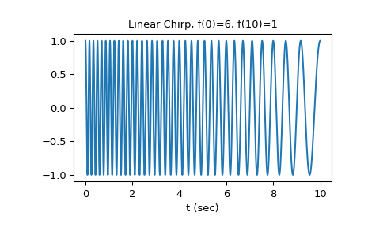
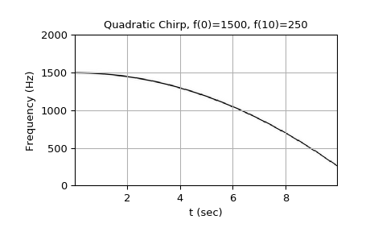
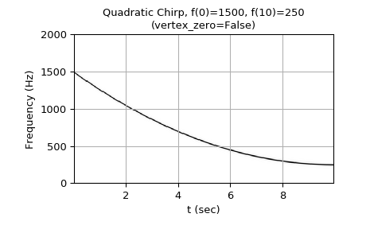
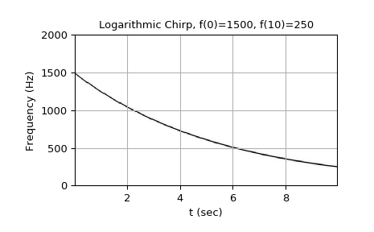
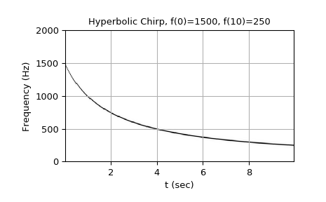

scipy.signal.chirp¶
-
scipy.signal.chirp(t, f0, t1, f1, method='linear', phi=0, vertex_zero=True)[source]¶ Frequency-swept cosine generator.
In the following, ‘Hz’ should be interpreted as ‘cycles per unit’; there is no requirement here that the unit is one second. The important distinction is that the units of rotation are cycles, not radians. Likewise, t could be a measurement of space instead of time.
- Parameters
- tarray_like
Times at which to evaluate the waveform.
- f0float
Frequency (e.g. Hz) at time t=0.
- t1float
Time at which f1 is specified.
- f1float
Frequency (e.g. Hz) of the waveform at time t1.
- method{‘linear’, ‘quadratic’, ‘logarithmic’, ‘hyperbolic’}, optional
Kind of frequency sweep. If not given, linear is assumed. See Notes below for more details.
- phifloat, optional
Phase offset, in degrees. Default is 0.
- vertex_zerobool, optional
This parameter is only used when method is ‘quadratic’. It determines whether the vertex of the parabola that is the graph of the frequency is at t=0 or t=t1.
- Returns
- yndarray
A numpy array containing the signal evaluated at t with the requested time-varying frequency. More precisely, the function returns
cos(phase + (pi/180)*phi)where phase is the integral (from 0 to t) of2*pi*f(t).f(t)is defined below.
See also
Notes
There are four options for the method. The following formulas give the instantaneous frequency (in Hz) of the signal generated by chirp(). For convenience, the shorter names shown below may also be used.
linear, lin, li:
f(t) = f0 + (f1 - f0) * t / t1quadratic, quad, q:
The graph of the frequency f(t) is a parabola through (0, f0) and (t1, f1). By default, the vertex of the parabola is at (0, f0). If vertex_zero is False, then the vertex is at (t1, f1). The formula is:
if vertex_zero is True:
f(t) = f0 + (f1 - f0) * t**2 / t1**2else:
f(t) = f1 - (f1 - f0) * (t1 - t)**2 / t1**2To use a more general quadratic function, or an arbitrary polynomial, use the function
scipy.signal.sweep_poly.logarithmic, log, lo:
f(t) = f0 * (f1/f0)**(t/t1)f0 and f1 must be nonzero and have the same sign.
This signal is also known as a geometric or exponential chirp.
hyperbolic, hyp:
f(t) = f0*f1*t1 / ((f0 - f1)*t + f1*t1)f0 and f1 must be nonzero.
Examples
The following will be used in the examples:
>>> from scipy.signal import chirp, spectrogram >>> import matplotlib.pyplot as plt
For the first example, we’ll plot the waveform for a linear chirp from 6 Hz to 1 Hz over 10 seconds:
>>> t = np.linspace(0, 10, 5001) >>> w = chirp(t, f0=6, f1=1, t1=10, method='linear') >>> plt.plot(t, w) >>> plt.title("Linear Chirp, f(0)=6, f(10)=1") >>> plt.xlabel('t (sec)') >>> plt.show()
For the remaining examples, we’ll use higher frequency ranges, and demonstrate the result using
scipy.signal.spectrogram. We’ll use a 10 second interval sampled at 8000 Hz.>>> fs = 8000 >>> T = 10 >>> t = np.linspace(0, T, T*fs, endpoint=False)
Quadratic chirp from 1500 Hz to 250 Hz over 10 seconds (vertex of the parabolic curve of the frequency is at t=0):
>>> w = chirp(t, f0=1500, f1=250, t1=10, method='quadratic') >>> ff, tt, Sxx = spectrogram(w, fs=fs, noverlap=256, nperseg=512, ... nfft=2048) >>> plt.pcolormesh(tt, ff[:513], Sxx[:513], cmap='gray_r') >>> plt.title('Quadratic Chirp, f(0)=1500, f(10)=250') >>> plt.xlabel('t (sec)') >>> plt.ylabel('Frequency (Hz)') >>> plt.grid() >>> plt.show()
Quadratic chirp from 1500 Hz to 250 Hz over 10 seconds (vertex of the parabolic curve of the frequency is at t=10):
>>> w = chirp(t, f0=1500, f1=250, t1=10, method='quadratic', ... vertex_zero=False) >>> ff, tt, Sxx = spectrogram(w, fs=fs, noverlap=256, nperseg=512, ... nfft=2048) >>> plt.pcolormesh(tt, ff[:513], Sxx[:513], cmap='gray_r') >>> plt.title('Quadratic Chirp, f(0)=1500, f(10)=250\n' + ... '(vertex_zero=False)') >>> plt.xlabel('t (sec)') >>> plt.ylabel('Frequency (Hz)') >>> plt.grid() >>> plt.show()
Logarithmic chirp from 1500 Hz to 250 Hz over 10 seconds:
>>> w = chirp(t, f0=1500, f1=250, t1=10, method='logarithmic') >>> ff, tt, Sxx = spectrogram(w, fs=fs, noverlap=256, nperseg=512, ... nfft=2048) >>> plt.pcolormesh(tt, ff[:513], Sxx[:513], cmap='gray_r') >>> plt.title('Logarithmic Chirp, f(0)=1500, f(10)=250') >>> plt.xlabel('t (sec)') >>> plt.ylabel('Frequency (Hz)') >>> plt.grid() >>> plt.show()
Hyperbolic chirp from 1500 Hz to 250 Hz over 10 seconds:
>>> w = chirp(t, f0=1500, f1=250, t1=10, method='hyperbolic') >>> ff, tt, Sxx = spectrogram(w, fs=fs, noverlap=256, nperseg=512, ... nfft=2048) >>> plt.pcolormesh(tt, ff[:513], Sxx[:513], cmap='gray_r') >>> plt.title('Hyperbolic Chirp, f(0)=1500, f(10)=250') >>> plt.xlabel('t (sec)') >>> plt.ylabel('Frequency (Hz)') >>> plt.grid() >>> plt.show()
